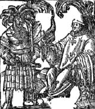

Resim 2

Kafasında tüylerden oluşan bir şapka ve elinde kılıcı bulanan bir Osmanlı askeri, Hristiyanlığı temsil eden bir papaz ile karşı karşıyadır. Papazın yüz hatları ile karşılaştırıldığında Osmanlı askerinin son derece “zalim ve acımasız barbar” olarak tasvir edildiği ortaya çıkmaktadır.
Kaynak: Ain anschlag wie man dem Türcke widerstand thun mag und durch ganz christenhait baide von gaistliche un weltliche stand geleyche bürde getrage würde on beschwerniβ mit ordenung der müntz, mit ordenung der müntz gar schön zulesen. Augsburg: 1522.